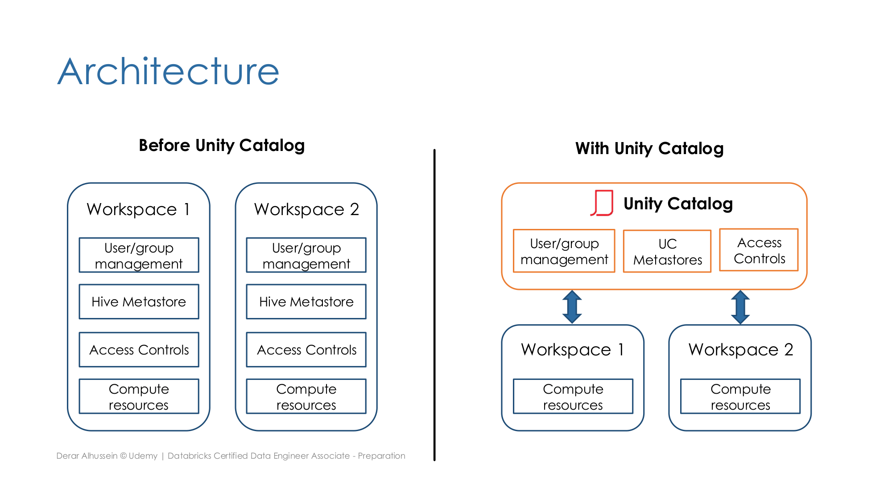
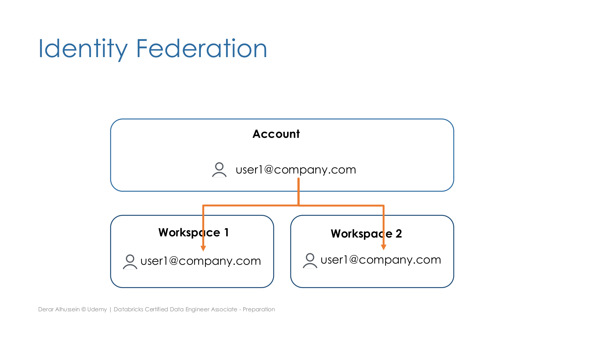
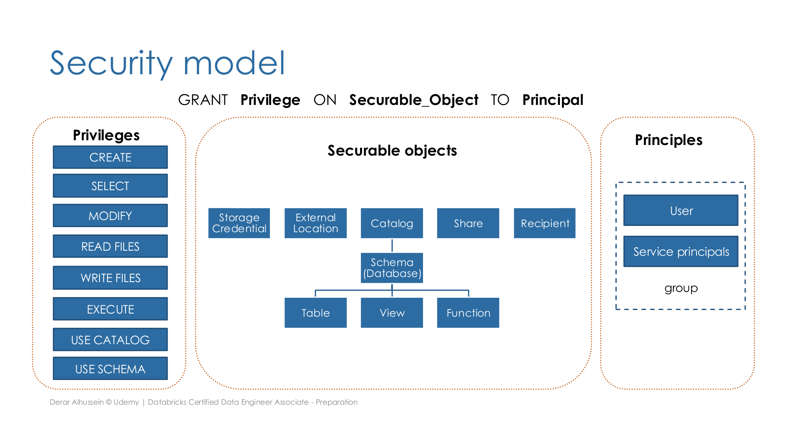

Section 7 · Governance and Security · Quelle: Udemy-Kursmaterial „Unity Catalog“ & „Data object privileges“, ergänzt mit Databricks-Dokumentation
Kapitel 1 dieser Section hat das Unity-Catalog-Sicherheitsmodell (ACLs, Tagging, Lineage, System-Tables) vorgestellt, Kapitel 7 die Befehle GRANT/REVOKE/DENY vertieft. Dieses Kapitel ergänzt drei bislang fehlende Bausteine: die Architektur-Perspektive (warum Unity Catalog eingeführt wurde), das Identitätsmodell (Users, Service Principals, Groups, Identity Federation), sowie das vollständige Rechtemodell im Vergleich zum älteren, Hive-Metastore-basierten Berechtigungssystem.
Vor Unity Catalog verwaltete jeder Databricks-Workspace seine Nutzerverwaltung, seinen Hive Metastore und seine Zugriffskontrollen vollständig unabhängig – Rechte mussten in jedem Workspace einzeln gepflegt werden, auch wenn dieselben Personen und dieselben Daten betroffen waren. Unity Catalog verlagert Nutzerverwaltung, Metastores und Zugriffskontrollen auf die Account-Ebene (verwaltet über die Account Console) und macht sie dadurch workspace-übergreifend wiederverwendbar: Ein einziger Unity-Catalog-Metastore lässt sich mehreren Workspaces gleichzeitig zuweisen, sodass diese sich Zugriffskontrollen und Datenzugriff teilen, statt sie zu duplizieren.

Unity Catalog unterscheidet drei Arten von Prinzipalen (siehe auch die GRANT-Beispiele in Kapitel 7):
Identitäten existieren dabei auf zwei Ebenen: auf Account-Ebene (zentral in der Account Console verwaltet) und auf Workspace-Ebene. Identity Federation erlaubt es, eine Identität einmalig auf Account-Ebene anzulegen und sie anschließend beliebigen Workspaces zuzuweisen – ohne dass in jedem Workspace eine eigene Kopie derselben Identität manuell gepflegt werden müsste.

Neben der bereits bekannten Objekthierarchie (Metastore → Catalog → Schema → Table/View/Function) verwaltet Unity Catalog zwei weitere Objektkategorien: Storage Credentials kapseln die Authentifizierung gegenüber dem zugrunde liegenden Cloud-Speicher und gelten für einen gesamten Speicher-Container; External Locations referenzieren darauf aufbauend ein konkretes Verzeichnis innerhalb dieses Containers. Für Delta Sharing kommen zusätzlich Shares (eine Sammlung von Tabellen, die mit einem oder mehreren Recipients geteilt wird) hinzu.
Kapitel 7 hat GRANT/REVOKE/DENY anhand einzelner Beispiele (SELECT, USE SCHEMA, ALL PRIVILEGES) gezeigt. Die vollständige Liste der in Unity Catalog verfügbaren Privilegien:
| Privileg | Bedeutung |
|---|---|
CREATE | Ein neues Objekt anlegen (z. B. eine Tabelle in einem Schema) |
SELECT | Lesezugriff auf ein Objekt |
MODIFY | Daten in einem Objekt hinzufügen, ändern oder löschen |
READ FILES | Zugriff auf die zugrunde liegenden Dateien eines Storage-Objekts (Volume, External Location) |
WRITE FILES | Schreibzugriff auf die zugrunde liegenden Dateien eines Storage-Objekts |
EXECUTE | Eine benutzerdefinierte Funktion (Function) ausführen |
USE CATALOG / USE SCHEMA | Voraussetzung, um überhaupt auf Objekte innerhalb des Catalogs bzw. Schemas zugreifen zu können (siehe Kapitel 7) |

Unity Catalog ist additiv: Der bisherige, workspace-lokale Hive Metastore bleibt nach Aktivierung von Unity Catalog vollständig zugänglich – unabhängig davon, welcher Unity-Catalog-Metastore dem Workspace zugewiesen ist, stellt der feste Catalog-Name hive_metastore weiterhin Zugriff auf die dort verwalteten Datenbanken und Tabellen bereit. Eine harte, erzwungene Migration ist damit nicht nötig – bestehende Hive-Metastore-Objekte und neue Unity-Catalog-Kataloge (z. B. dev, prod) lassen sich parallel referenzieren.
SELECT, MODIFY, CREATE, READ_METADATA (Metadaten eines Objekts einsehen), USAGE (ohne inhaltliche Wirkung, aber Voraussetzung für jede Aktion auf einem Datenbankobjekt) und ALL PRIVILEGES, vergeben ebenfalls über GRANT ... ON ... TO ... auf die Objekttypen CATALOG, SCHEMA, TABLE, VIEW, FUNCTION sowie ANY FILE für Zugriff auf das zugrunde liegende Dateisystem. Wer Rechte vergeben durfte, richtete sich nach der Objekt-Eigentümerschaft (Databricks-Administrator: alle Objekte im Catalog und Dateisystem; Catalog-Owner: alle Objekte im Catalog; Database-Owner: alle Objekte in der Datenbank; Table-Owner: nur die eigene Tabelle). Unity Catalog übernimmt das Grundprinzip (GRANT/REVOKE, Owner-basierte Rechtevergabe), ersetzt aber ANY FILE durch die feingranularen READ FILES/WRITE FILES-Privilegien auf Volumes bzw. External Locations und führt zusätzlich USE CATALOG als neue, durch die dritte Namensebene (Catalog) nötig gewordene Voraussetzung ein – USAGE und READ_METADATA entfallen dagegen als eigenständige Privilegien.